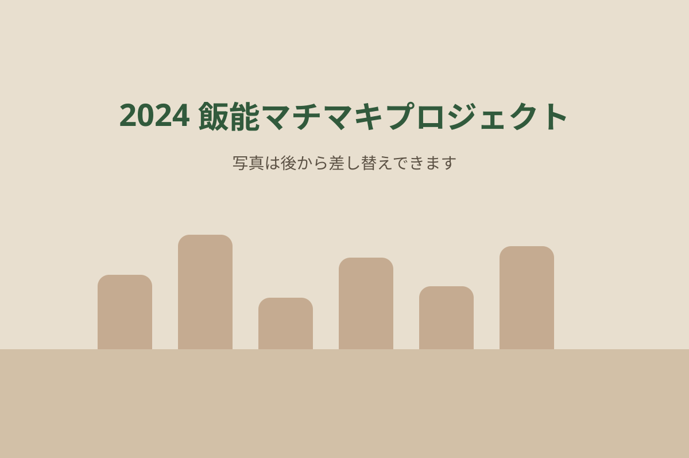

2024.07
飯能夏祭り
地域の皆さんと薪割り体験を実施し、社会実験で使う薪を一緒につくりました。
お祭りや木づかいイベントでの木工体験、景観社会実験、成果報告会などを年度ごとに記録します。

地域の皆さんと薪割り体験を実施し、社会実験で使う薪を一緒につくりました。
商店街24か所に薪をデザインして設置。景観評価や行動観察を行いました。

薪割り・釘打ち・のこぎり・棚づくりを通して、延べ691名が景観づくりに関わりました。
インタビューをもとにしたオブジェを20店舗に設置し、アンケート・写真撮影調査を実施しました。
各イベントカードから、開催概要・参加人数・写真・次の活動とのつながりを詳しく読む個別ページを追加できます。